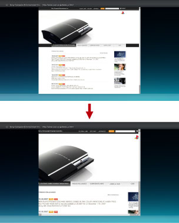

Réseau > Modification de la taille d'affichage d'une page Web
Modification de la taille d'affichage d'une page Web
Les pages Web peuvent apparaître trop petites ou trop grandes en fonction de la combinaison du réglage de la sortie vidéo du système PS3™ et du téléviseur connecté. Si c'est le cas, vous pouvez procéder comme suit pour régler la taille d'affichage.
Utilisation de la fonction de zoom
Pour agrandir automatiquement à la taille optimale la zone de l'écran dans laquelle se trouve le pointeur. Le taux d'agrandissement optimal est automatiquement calculé pour la zone dans laquelle se trouve le pointeur. Placez le pointeur dans la zone que vous souhaitez agrandir, appuyez sur la touche  , puis sélectionnez [Zoom] sous
, puis sélectionnez [Zoom] sous  (Visualiser) dans le menu d'options.
(Visualiser) dans le menu d'options.
Exemple d'agrandissement du texte
Le système calcule le taux d'agrandissement en fonction de la taille du paragraphe de texte au sein de la zone dans laquelle se trouve le pointeur, puis il affiche le texte agrandi.

Exemple d'agrandissement d'une image
Le système calcule le taux d'agrandissement en fonction de la taille de l'image au sein de la zone dans laquelle se trouve le pointeur, puis il affiche l'image agrandie.

Modification de la résolution
Pour modifier la résolution d'écran d'une page Web. Vous pouvez régler l'affichage de la page Web à une taille qui facilite sa lecture, en l'adaptant à la résolution de sortie vidéo du système PS3™. Appuyez sur la touche , puis sélectionnez [Résolution] sous  (Outils) dans le menu d'options.
(Outils) dans le menu d'options.
Si [-1] ou [-2] est sélectionné lorsque la résolution de sortie vidéo du système PS3™ est réglée sur 1080p ou 1080i, l'affichage est agrandi et est donc plus facile à regarder. Si [+1] ou [+2] est sélectionné lorsque la résolution de sortie vidéo du système PS3™ est réglée sur Standard (NTSC : 480i / PAL : 576i) ou 480p / 576p, l'affichage est réduit et est donc plus facile à regarder.
Exemple de réglage de la résolution de sortie vidéo du système PS3™ sur [1080i] et de [Résolution] sur [-2]

Exemple de réglage de la résolution de sortie vidéo du système PS3™ sur [Standard (NTSC : 480i / PAL : 576i)] et de [Résolution] sur [+2]